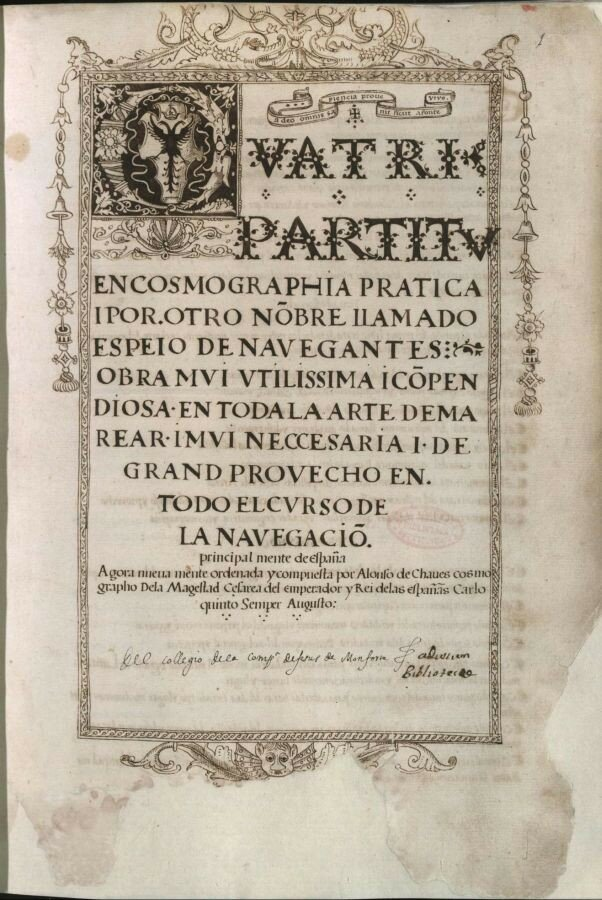
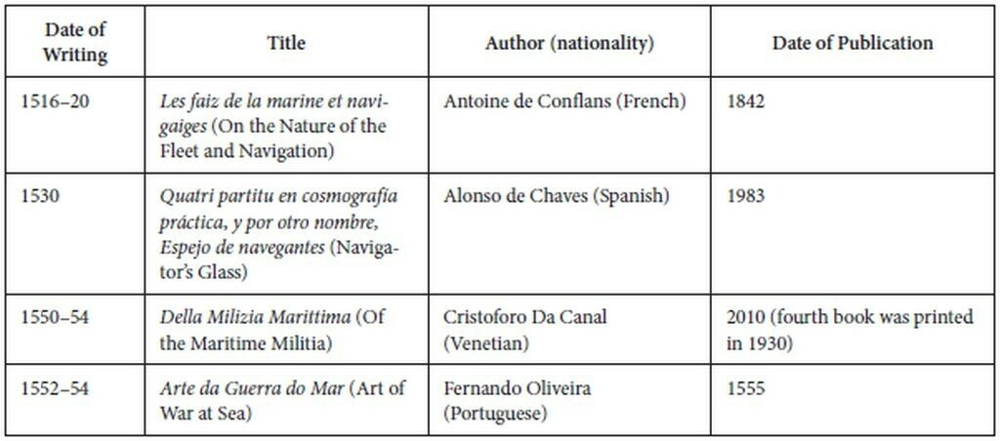

О битве одного флота против другого
Так мы не день, не месяц и не год,
А целый век от моря и до моря
Металися, как угорелый кот,
Томительно исследуя и споря...
Н. Добролюбов, Новый общественный вопрос
Начнем обещанное в прошлый раз знакомство с содержанием трактата Алонсо де Чавеса Espejo de Navegantes.
Ссылки на работу этого автора уже появлялись в нашем журнале, как в основном тексте, так и в комментариях. Сейчас скажем несколько слов о структуре и содержании трактата. Благодаря щедрости испанских библиотекарей (Dell collegio déla compa de Jesús de Monsorio. Real Academia Biblioteca de la Historia, MS 9-14-1 2791) его сейчас можно найти в сети

Титульный лист трактата Алонсо де Чавеса
Для дотошных читателей приведем полное название этого манускрипта:
Quatri Partitu en Cosmographia pratica i por otro nóbre llamado Espeio de Navegantes: Obra muy utilissima i cópendiosa en toda la Arte de Marear i mui neccesaria i de gran provecho en todo el curso de la navegado, principal¬mente de España. Agora nuevamente ordenada y compuesta por Alonso de Chaves cosmographo Dela Magestad Cesárea del emperador y Rei délas españas Carlo quinto Semper Augusto.
Четыре части практической Космографии, иначе называемые Зеркалом навигаторов. Весьма полезный и ценный труд по всем разделам морского ремесла, крайне необходимый, особенно в Испании, курс мореплавания. Вновь пересмотренный и составленный Алонсо де Чавесом, космографом Его Королевского величества Императора и короля Испании Карла пятого, Августа навсегда.
Quatri Partitu – это четыре книги (Libro primero, Libro segundo, Libro tercero и Libro qvarto), некоторые из них подразделяются на трактаты (Tratado) и главы (Capitulo), другие – только на главы. Предшествующее тексту содержание трактата не полностью отражает его действительный состав: вместо некоторых заявленных в содержании глав лишь пустые страницы, другие заголовки и вовсе ничего не представляют. И тем не менее текст достаточно связен и интересен. Исследователи его полагают, что это было своего рода учебное пособие для желающих сдать экзамен на «штурмана дальнего плавания» испанских кораблей, отправляющихся в обе Индии.
Чтение трактата действительно доставляет удовольствие, но языковые трудности не позволяют сейчас выложить полный его перевод, поэтому ограничимся (пока!) лишь теми его главами, которые касаются рассматриваемой нами темы, а именно – ведения боевых действий соединениями кораблей. Напомним, что этот трактат де Чавеса, появившийся, как считают, в 1537 году, был одним из первых трудов в этой области.

Список трактатов первой половины XVI века, содержащих вопросы тактики и стратегии войны на море (Luis Nuno Sardinha Monteiro)
Интересующий нас материал находится в Libro tercero, Tratado tercio i postrero, Capitulo qvinto (de la guera o batalla) и Capitulo sexto (de ls batalla de vna flota contra otra). Мы не будем сейчас отвлекаться на пятую главу, которая содержит материал о подготовке к бою и ведению его одиночным кораблем, а сразу обратимся к главе шестой (O боевых действиях одного флота против другого). Эта глава содержит два подраздела: подготовка (preparation) и сражение (batalla).
О битве одного флота против другого
Подготовка
Прежде всего, корабли флота должны привести в готовность все виды оружия в количествах, соответствующих данному типу корабля, численности личного состава корабля, и его размеру. Все другие этапы подготовки корабля к бою описаны в предыдущих разделах.
Подобно тому, как у каждого корабля должен быть капитан, управляющий судном и его действиями, так и у всего флота должен быть капитан-генерал, которому подчиняются все корабли флота и все их капитаны.
После того как назначен капитан-генерал и все корабли флота завершили подготовку к бою, которая описана выше, непосредственно перед сражением капитан-генерал должен объявить сбор всех кораблей для построения их в боевой ордер (el capitán general debe mandar juntar toda la flota para ponerla en orden), подобно тому, как это делается при подготовке сражения одной сухопутной армии (ejército) с другой.
Точно так, как в сухопутной армии тяжеловооруженные воины (los hombres de armas) выделяются в отдельное соединение для прорыва фронта и ведения встречного сражения (para romper y encontrar), а легкая кавалерия – в другое соединение для оказания поддержки и преследования противника (socorrer y alcanzar), а также совершения внезапных рейдов (entrar y salir, буквально «войти и выйти», в легкой кавалерии этот термин обозначал короткие внезапные атаки на слабые пункты обороны противника – g._g.), капитан-генерал флота должен собрать в одно соединение наиболее мощные и крупные корабли для атаки на противника, взятия на абордаж его кораблей, захвата и уничтожения, а более мелкие и слабые – в другое соединение, для воздействия на корабли противника вне ордера огнем артиллерии, стремительными налетами, преследованием отдельных вражеских кораблей, покидающих район битвы, для оказания помощи и поддержки там, где это больше всего требуется.
Капитан-генерал должен отобрать малые и легкие суда общей численностью до одной четверти своего флота и разместить их на флангах главных сил. Желательно, чтобы они сохраняли самостоятельность действий, контролируя обстановку на флангах.
Он должен готовить каждый корабль [к абордажу] и руководить его действиями по сцепке с кораблем противника таким образом, чтобы не оказаться между двумя вражескими кораблями и не вести абордажный бой с обоих своих бортов одновременно.
Он должен также отобрать четвертую часть всех плавсредств, принадлежащих крупным судам флота, оснастить и вооружить их для решения специальных задач, о которых говорилось выше. […]
Отдав все распоряжения и команды, указанные выше, капитан-генерал должен расположить оставшиеся три четверти своего флота следующим образом:
Оценив свою позицию и направление ветра, он должен решить, каким образом захватить ветер для своего флота.
После этого следует оценить боевые порядки флота противника, находятся ли его корабли в плотном строю (vienen todos juntos) или построены в кильватерную колонну (unos en pos de otros á la hila), разбиты ли они на эскадры (vienen puestos en escuadrones) или идут строем фронта (en ala), находятся ли крупные корабли в центре или на флангах, какое место занимает флагманский корабль (la capitana), а также все другие существенные элементы, которые всегда должны быть у него под рукой.
В любом случае, он должен сделать все возможное, чтобы его флот получил преимущество в ветре относительно флота противника, иначе он будет ослеплен дымом от пушечного огня как своих кораблей, так и кораблей противника, корабли своего флота не смогут видеть друг друга и распознавать, где свой, где чужой и начнут вести огонь по своим.
Если после завершения всех этих мероприятий противник начнет перестроения своего флота в эскадры, мы также должны действовать подобным образом, собирая все более крупные корабли (las naos mayores) в одно формирование в авангарде, чтобы они были первыми в абордаже и получили первый удар противника; капитан-генерал должен занять место в центре этого формирования, чтобы он мог видеть всех тех, кто находится впереди и тех, кто следует за ними.
Каждая эскадра должна быть построена в линию фронта (en ala), чтобы любой мог видеть противника и использовать свою артиллерию без помех; корабли не должны следовать один за другим, потому что в этом случае возникнут большие проблемы из-за того, что только головной корабль сможет вести огонь. Во всяком случае, корабль не так подвижен, как человек, чтобы суметь быстро сменить свое положение и произвести необходимые действия.
В арьергарде должна находиться та четверть корабельного состава, которая ранее была выделена в эскадру поддержки в составе легких и быстроходных парусных кораблей. Они не должны располагаться сразу же за кораблями флота, так как оттуда не увидят происходящее и не смогут оценить, куда и когда прийти на помощь, а находиться ближе к тому флангу флота, на котором располагается флагманский корабль; если же численность арьергарда позволяет, то его корабли должны распределяться между обоими флангами флота; если они в одном соединении, то необходимо находиться на наветренном фланге, по причинам названным выше.
Если флот противника будет выстраиваться в одну линию фронта, наш флот должен сделать то же самое, размещая самые крупные и мощные корабли в центре, а легкие – на флангах, учитывая, что корабли центра всегда получают большие повреждения, так как вынуждены сражаться на оба борта.
Если же противник начнет построение своего флота в форме острия копья или треугольника, мы должны ответить ордером в два крыла (en dos alas), удерживая авангард каждого на большей дистанции от центра и сближая арьергарды , беря противника «в клещи» и вынуждая сражаться на два фронта; крупные корабли каждой линии должны находиться в арьергарде, а легкие – в авангарде, чтобы быстро реагировать на действия противника.
А если противник приближается двумя линиями фронта (dos alas), мы должны сделать то же самое, разместив наиболее крупные корабли напротив самых мощных кораблей противника. Необходимо пройти сквозь строй противника в его центре, оставив за собой огонь и дым, ослепляющий врага со всех сторон.
Построив флот в один из упомянутых выше ордеров и подготовив корабли к сражению, капитан-генерал должен назначить ясно понимаемые сигналы, подаваемые флагами, пушечными выстрелами или с помощью марселя (con bandera ó tiro ó vela de gavia), чтобы оповестить о начале атаки, перехода к абордажу, оказании помощи, отходе, преследовании противника.
Содержание раздела BATALLA рассмотрим в следующий раз.